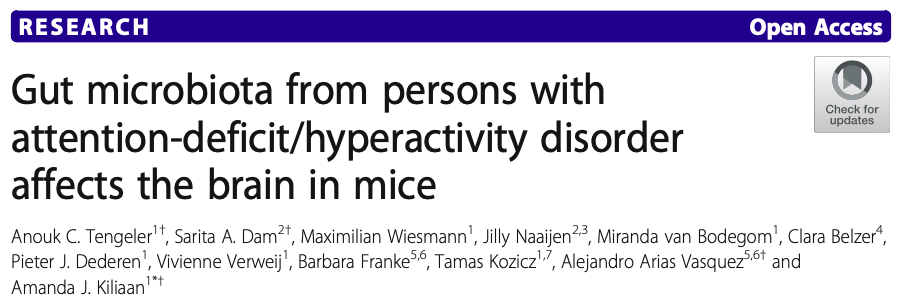
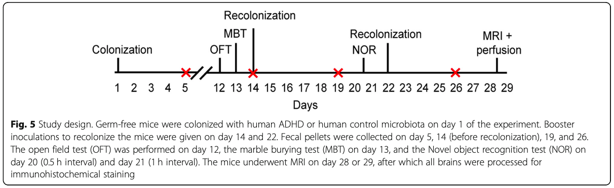
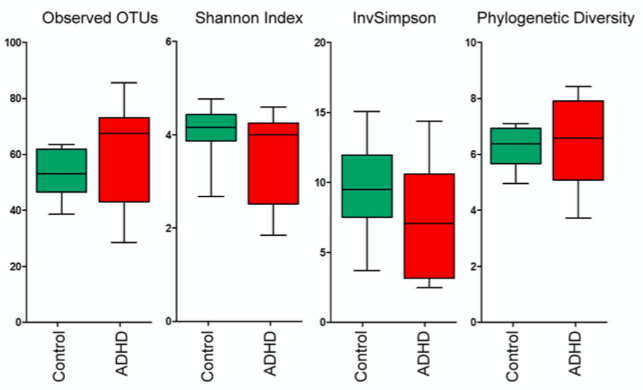
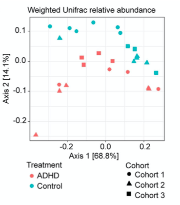
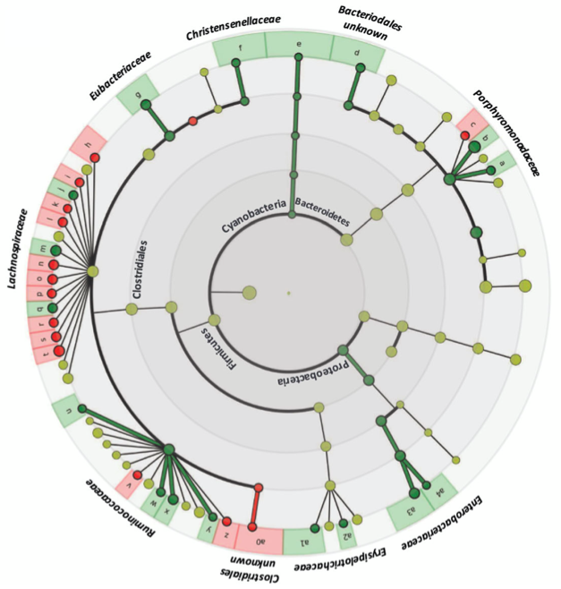
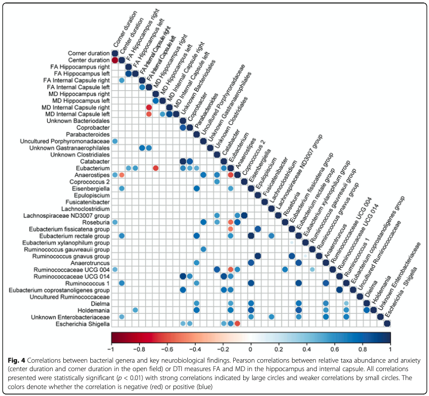

tab <- table(colData(tse)$patient_status, colData(tse)$cohort)
colnames(tab) <- c("Cohort1", "Cohort2", "Cohort3")
knitr::kable(tab)| Cohort1 | Cohort2 | Cohort3 | |
|---|---|---|---|
| ADHD | 4 | 5 | 4 |
| Control | 6 | 5 | 3 |
Tengeler2020 is a randomised blinded study on the effects of gut microbiome on attention-deficit/hyperactivity disorder (ADHD) in humanised mice (Tengeler et al. 2020).
Tengeler et al. (2020)

Young, male, germ-free C57BL/6JOlaHsd mice (n = 27) were humanised with gut microbiome from either ADHD patients (n = 3) or healthy controls (n = 3) of matched age. Notably, the mice belonged to three different cohorts.
tab <- table(colData(tse)$patient_status, colData(tse)$cohort)
colnames(tab) <- c("Cohort1", "Cohort2", "Cohort3")
knitr::kable(tab)| Cohort1 | Cohort2 | Cohort3 | |
|---|---|---|---|
| ADHD | 4 | 5 | 4 |
| Control | 6 | 5 | 3 |
Microbiome data was obtained by 16S rRNA gene sequencing of bacterial DNA sampled from faecal pellet on a weekly basis. Then, sequence reads were assembled into Operational Taxonomic Units (OTUs) with an NG-Tax pipeline.
In addition to microbiome analysis, during the experimental period mice underwent multiple behavioural tests (OFT, MBT and NOR) and neurological measurements (MRI and perfusion), creating the opportunity to perform analyses across omics (multiomics).

The profile of the ADHD-related microbiome community showed minor differences from the control in terms of alpha diversity, but the two groups could be distinguished in terms of beta diversity.


Some taxa were significantly correlated with neurobiological features.

